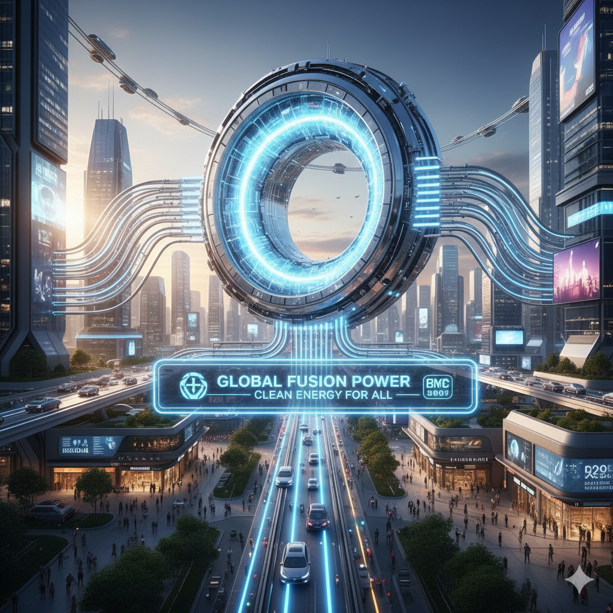

Lo que comenzó como un experimento médico para restaurar la movilidad en pacientes con parálisis ha dado el salto al mercado general. Neuralink ha anunciado hoy el lanzamiento de Telepath, un dispositivo no invasivo (en forma de diadema ergonómica) que permite la interfaz cerebro-computadora sin necesidad de cirugía
El dispositivo utiliza sensores de electroencefalografía (EEG) de alta densidad y modelos de IA generativa para traducir "intenciones de escritura" en texto digital con una precisión del 98%. En las demostraciones en vivo, los usuarios lograron redactar correos electrónicos y controlar hogares inteligentes simplemente visualizando las acciones, alcanzando velocidades de hasta 150 palabras por minuto.
A pesar del entusiasmo de los entusiastas de la productividad, los defensores de la ciberseguridad advierten sobre el "Brain-jacking". ¿Qué sucede si una empresa puede analizar tus impulsos neuronales ante un anuncio publicitario? El debate sobre los neuro-derechos ha llegado a la ONU, donde se busca prohibir la recolección de datos subconscientes sin consentimiento explícito.

Tras décadas de ser calificada como "la energía que siempre está a 30 años de distancia", la fusión nuclear finalmente ha llegado. La empresa Helion Energy ha confirmado que su séptimo prototipo de reactor de fusión por compresión magnética ha logrado inyectar energía limpia y constante a la red eléctrica de Washington, EE. UU.
A diferencia de la fisión nuclear actual, la fusión no produce residuos radiactivos de larga duración y utiliza helio-3 y deuterio como combustible, elementos abundantes. Este reactor produce energía mediante la recuperación directa de electricidad de los campos magnéticos, eliminando la necesidad de turbinas de vapor ineficientes.
Este flujo masivo de energía barata está permitiendo la expansión de los centros de datos necesarios para la IA cuántica. Con el costo del kilovatio-hora desplomándose, se espera que para finales de 2026 la desalinización de agua de mar a gran escala sea económicamente viable, transformando la agricultura en zonas desérticas.
Laboratorios de nanotecnología en Japón han presentado la primera línea de consumo de Materia Programable basada en microrobótica fluida. Se trata de materiales compuestos por miles de millones de "catoms" (átomos robóticos) que pueden reconfigurar su estructura física mediante impulsos eléctricos.
La primera aplicación práctica ha llegado a la industria textil con el "Viste-Único". Es una prenda de vestir que, mediante una aplicación en el móvil, puede cambiar su textura de seda a lana, alterar su color e incluso modificar su corte (de manga larga a corta) en cuestión de segundos.
El potencial a largo plazo es asombroso: muebles que se transforman de mesa a silla según la necesidad del espacio, o carcasas de dispositivos electrónicos que se reparan a sí mismas tras una caída. Esta tecnología promete reducir el consumo de recursos naturales al permitir que un solo objeto físico cumpla múltiples funciones.